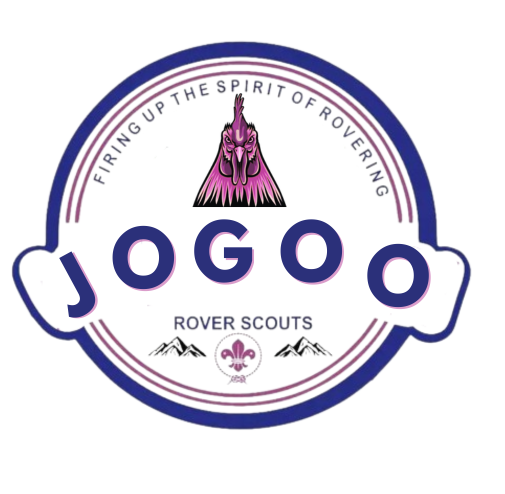

Kenya Scouts AI Assistant
All official KSA documentation at your fingertips
EN
What is the Scout Promise?
History of Kenya Scouts
How to earn badges
Upcoming camps
Key Topics
History of Scouting in Kenya
Scout Promise & Law
Sections & Programs
Badges & Awards
Activities & Camps
Leadership Training
Community Service
About This Assistant
An AI-powered guide...